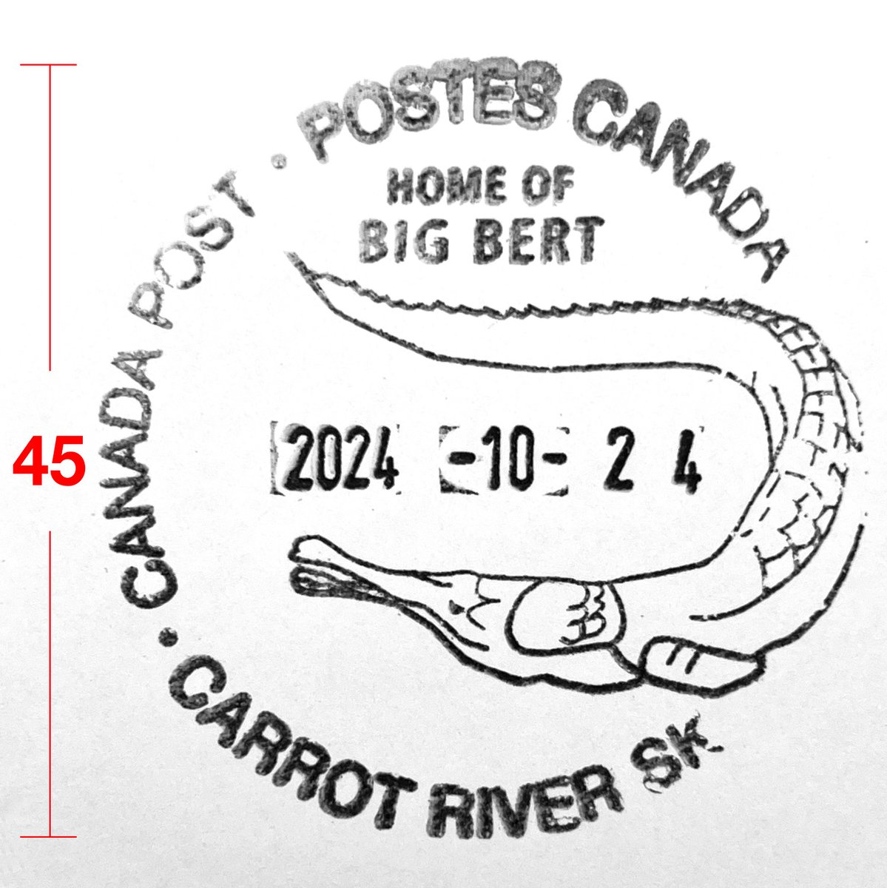

Carrot River PO pictorial cancel
Home of Big Bert
- Status
- Active
- Run dates
- 2015-01-01 to 2026-12-31
- Design
- "HOME OF BIG BERT"; dinosaur
- Ink colour
- Black
- Designer
- Unknown
- Post office
- Carrot River PO
1020 Main St
Carrot River, SK
S0E 0L0 - Subjects
- fossil, dinosaur, reptile, animal
- Notes
- Big Bert is a marine crocodile (Terminonaris robusta). 'Big Bert is a 92 million year old crocodile that once lived in the area and whose fossilized bones were discovered 20 years ago along the banks of the Carrot River.' (Government of Saskatchewan)
Collect it by mail. Send your stamped covers, with a stamped return envelope, to the post office address above (check the notes first). How to collect pictorial cancels by mail · en français
 Tisdale POThe Place to Bee
Tisdale POThe Place to Bee Smeaton POWhere the North Begins
Smeaton POWhere the North Begins Archerwell POWhere You
Archerwell POWhere You Spalding POWhere friends meet
Spalding POWhere friends meet Watson POHOME OF THE ORIGINAL SANTA CLAUS DAY
Watson POHOME OF THE ORIGINAL SANTA CLAUS DAY Englefeld POHome of the Hogfest
Englefeld POHome of the Hogfest